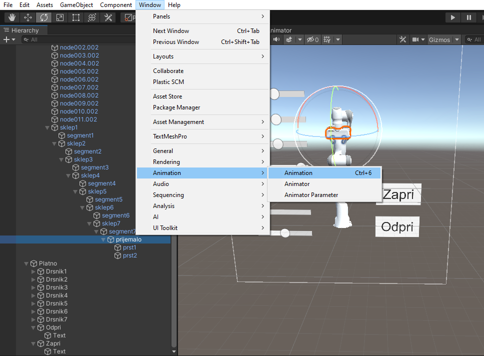

Navodila za izdelavo aplikacije Sodelujoča robotika - 1. del
V tem projektu se boste spoznali s pojmom sodelujoča robotika in izdelali aplikacijo, kjer uporabnik prek drsnih gumbov (drsnikov) premika 3D model robota po sklepih. Za implementacijo obogatene resničnosti bomo uporabili programsko orodje Vuforia.
Datoteke, ki ti bodo pomagale pri izdelavi aplikacije, lahko preneseš s klikom na spodnji gumb.
Sodelujoča robotika
Besedo robot si je leta 1920 izmislil češki dramski pisatelj znanstvene fantastike Karel Čapek in jo uporabil v svoji igri R. U. R. (»Rossumovi univerzalni roboti«). V češčini robota
pomeni delo oziroma suženj. Takrat so bili roboti znanstvena fantastika, dandanes pa jih uporabljamo v medicini, gospodinjstvu, proizvodnji, vojski, raziskovalne namene itd.
Največ robotov se uporablja v industriji, kjer opravljajo najrazličnejša dela: strega in manipulacija z objekti, paletizacija, varjenje, barvanje, meritve in druge avtomatizirane aplikacije.
Roboti so pri svojem delu na pram človeku močnejši (imajo večjo nosljivost), natančnejši, bolj ponovljivi (en gib lahko robot ponavlja hitreje in natančneje kot človek), lahko delajo brez premora in enakomerno, delajo v človeku težkih delovnih pogojih in se ne pritožujejo nad monotonostjo dela.
Zaradi varnostnih razlogov je potrebno industrijske robote ograditi z zaščitnimi ograjami, ki preprečujejo interakcijo robota in človeka. Ti roboti so namreč togi in brez sposobnosti
zaznavanja okolice in ovir, ki bi se znašle v delovnem prostoru robota. Druga pomanjkljivost industrijskih robotov pa je nezmožnost prilagajanja na nove situacije. Posamezna robotska celica
je bila namreč narejena za avtomatizacijo določene naloge. V kolikor se samo malo spremeni geometrija obdelovanca ali naloga sama, je potrebnega veliko dela, da robotsko celico prilagodimo novi nalogi (desna slika).
Nefleksibilnost in potencialna nevarnost človeku sta glavna razloga za razvoj sodelujočih robotov, saj omogočajo prisotnost človeka ob robotu med delovanjem brez varnostnih ograj (leva slika).
Da so sodelujoči roboti relativno varni za delo s človeku, omogočajo različni senzorji (npr. senzor sile), ki zaznajo vpliv zunanjih sil na površino robota. Če izmerjena sila preseže določeno vrednost, se robot nemudoma ustavi. Sodelovanje robota in človeka združuje pozitivne lastnosti z obeh strani. Robot pripomore k visoki natančnosti, večji nosljivosti in veliki ponovljivosti, človek pa k fleksibilnosti.
Primeri sodelujočih robotov so: Franka Emika Panda, Yaskawa Motoman HC10, KUKA iiwa, Fanuc (CR-35iA, CR-7iA, CR-4iA), Universal Robots (UR3, UR5, UR10), itd. Večino omenjenih robotov si lahko ogledate v Laboratoriju za robotiko na Fakulteti za elektrotehniko.
V tem projektu in nadaljevalnem projektu Sodelujoča robotika - 2. del se bomo pobliže spoznali s sodelujočim robotom Franka Emika Panda. Franka Emika Panda je sodelujoči robot proizveden v Nemčiji. Ima sedem sklepov, v katerih so nameščeni merilniki sile. Merjenje sile in navorov v sklepih omogoča zaznavanje trkov z okolico (levo) in vodenje z roko (desno). To pomeni, da za premikanje robotske roke ne potrebujemo ročne učne enote (ang. teach pendant), tako kot pri industrijskih robotih, ampak lahko vrh robota primemo z roko in ga premaknemo na poljubno mesto.
Postavitev scene
Najprej ustvari nov Unity projekt.
Prenesi gradivo s pripravljenimi datotekami in uvozi datoteko formata .unitypackage (Assets > Import Package > Custom Package).
Aplikacija je sestavljena iz ene scene, v kateri se v osnovi nahaja samo igralni objekt FrankaPanda. Uvozi prefab robota (datoteka formata .prefab), ki se nahaja v mapi Assets > 3DModeli. Da se bodo sklepi robota vrteli okoli pravilnih osi, v orodni vrstici zgoraj spremeni Toggle Tool Handle Position in Toggle Tool Handle Rotation v Pivot in Local. Preveri, da se sklepi pravilno vrtijo tako, da si izbereš enega izmed sklepov robota, ki so otroci igralnega objekta FrankaPanda, in ga zavrtiš okoli primerne osi.
Implementacija uporabniškega vmesnika
Uporabniški vmesnik je sestavljen iz sedmih drsnikov (ang. slider), ki bodo vplivali na rotacijo posameznih sklepov robota. Če želimo v sceno postaviti drsnik, moramo najprej kreirati Platno. Tega najdemo v zavihku UI > Canvas, do katerega dostopamo z desnim klikom v okno Hierarhija. Preimenuj ga v Platno. V komponenti Canvas spremeni Render Mode v Screen Space - Overlay in v komponenti Canvas Scaler podaj resolucijo naprave, na kateri boš poganjal aplikacijo (npr. Samsung Galagy S7 ima resolucijo 1440 x 2560).

Da si boš bolje predstavljal kako bo uporabniški vmesnik izgledal, lahko v oknu Game v zgornji vrstici prilagodiš resolucijo okna tvoji napravi.

Nato ustvari sedem drsnikov, ki naj bodo otroci objekta Platno. Najdemo jih v zavihku UI > Slider. Poimenuj jih Drsnik1, Drsnik2, ..., Drsnik7. Prav tako jim prilagodi pozicijo in velikost in po želji spremeni barvo.
Spremeniti je potrebno tudi območje vrednosti (minimalna in maksimalna vrednost drsnika) in pa začetno vrednost ob zagonu aplikacije. Tu se je potrebno ravnati po dokumentaciji robota Franka.
Kot je prikazano na spodnji sliki, so sklepi označeni z A1, A2, ..., A7. Območje zasuka vsakega izmed sklepov najdete v tabeli desno (joint position limits).
Začetne vrednosti naj bodo:
A1(začetna): 0°,
A2(začetna): 0°,
A3(začetna): 0°,
A4(začetna): -10°,
A5(začetna): 0°,
A6(začetna): 0°,
A7(začetna): 0°,
Za Drsnik1 moramo potemtakem vrednost Min Value nastaviti na -166, Max Value na 166 in Value na 0.
Implementacija logike
Za logiko premikanja robota po sklepih bomo uporabili vnaprej pripravljeno skripto PremikanjePoSklepih, ki se nahaja v mapi Assets > Skripte. Ta skrbi, da se sklepi robota vrtijo glede na vrednosti drsnikov. Najprej jo dodaj kot komponento na igralni objekt RobotFranka. V vnosna polja povleci igralni objekt sklep1 in Drsnik1, zapiši hitrost vrtenja ter aplikacijo zaženi s klikom na gumb Play. Skripta je opremljena s komentarji, manjka pa ji nekaj vrstic kode, ki čakajo nate, da jih dopolniš. Navodila najdete v sami skripti v obliki komentarjev.
Namig: Os vrtenja lahko preberemo iz scene, če kliknemo na posamezen sklep v oknu Hierarhija. Koordinatna os rdeče barve je x os, zelene je y os in modre barve je z os.
Implementacija obogatene resničnosti
Naslednji korak je implementirati obogateno resničnost, tako da bo aplikacija prepoznala slikovni marker in nanj postavila našo sceno s z robotom. Pri tem bomo uporabili algoritme računalniškega vida, ki so del programskega orodja Vuforia.
Prijavi se v Vuforia Developer Portal in najprej pod zavihkom License Manager s klikom na gumb Get Basic ustvari svojo licenco, ki jo boš moral vnesti v vsak svoj projekt, ki bo uporabljal Vuforio.
Če si licenco že ustvaril in si tudi že zgeneriral podatkovno bazo s slikovnim markerjem pri enem izmed prejšnjih projektov, preskoči naslednjih nekaj korakov.
Licenco poimenuj in svojo izbiro potrdi s klikom na gumb Confirm.

Nato pod zavihkom Target Manager ustvari novo podatkovno bazo s klikom na Add Database. V tej bazi se bodo nahajali vsi naučeni slikovni markerji oziroma tarče.

Podatkovno bazo poimenuj in potrdi svojo izbiro s klikom na gumb Create.

V naslednjih korakih bomo Vuforio naučili kako izgleda naša slikovna tarča. Slika tarče se nahaja v datoteki z gradivi (2d_marker.jpg). Marker uvozi v Vuforia Developer Portal s klikom na gumb Add Target.
Ker gre v našem primeru za prepoznavo 2D slikovnega markerja, označi tip markerja kot Image, poišči mesto datoteke s sliko markerja, vnesi njegovo širino v metrih in po želji spremeni ime.

Po nekaj minutah ( < 5min) je slikovni marker sprocesiran. Če kliknemo na ime markerja, se nam odpre okno z njegovimi informacijami. S klikom na gumb Show Features lahko vidimo
točke, ki jih je Vuforia prepoznala za zanimive oziroma za ključne karakteristike slike, ki jih bo iskala v sliki iz kamere med poganjanjem aplikacije. Opazimo lahko, da se karakteristične točke
nahajajo na ostrih robovih in na prehodu med dvema kontrastnima barvama.
Ker je karakterističnih točk veliko, si je slikovni marker prislužil oceno 5 zvezdic.
Sedaj imamo vse potrebno, da implementiramo Vuforio v naš Unity projekt. Celoten paket programov in funkcij, ki jih ponuja Vuforia, naložimo v obliki Unity paketa (add-vuforia-package-10-9-3.unitypackage), ki je shranjen v datoteki z gradivi.
V Unity ga naložimo prek Assets > Import Package > Custom Package in izbiro potrdimo s klikom na gumb Import in nato Update.

V sceno postavi objekt ARCamera (Vuforia Engine > ARCamera), ki ima enako vlogo kot Main Camera z dodanimi komponentami za prepoznavo slike. Objekta Main Camera zato ne potrebujemo več in ga lahko izbrišemo iz scene.

V objektu ARCamera kliknemo na gumb Open Vuforia Engine configuration v komponenti Vuforia Behaviour in v vnosno polje App License Key skopiramo licenco, ki smo jo predhodno ustvarili na Vuforia Developer Portalu.

Naslednji korak je v sceno implementirati slikovni marker, na katerega bo vezan objekt FrankaPanda. Slikovni marker (Image Target) se nahaja v meniju Vuforia Engine > Image Target. Za pravilno delovanje potrebuje informacijo o sliki, ki jo mora iskati in ji slediti, zato moramo njegovi komponenti Image Target Behaviour dodati podatkovno bazo, ki smo jo predhodno ustvarili v Vuforia Developer Portalu. Iz portala jo na računalnik prenesemo s klikom na gumb Download Database; preden jo uvozimo v objekt Image Target jo je potrebno prenesti iz mape v računalniku v Unity projekt (Assets > Import Package > Custom Package).
Spremenimo še velikost objekta FrankaPanda, da bo sorazmerne velikosti z objektom Image target in postavimo objekt FrankaPanda pod objekt Image target, tako da bo njegov otrok.
V zadnjem koraku razvoja aplikacije moramo aplikacjio zgraditi in jo naložiti na Android napravo, kjer jo bomo tudi stestirali. V meniju File > Build Settings klikni na gumb Add Open Scenes.
En Unity projekt ima lahko namreč več scen, ni pa nujno, da so vse namenjene končni aplikaciji (nekatere se lahko uporabljajo samo za prototipiranje).
Ker bomo aplikacijo poganjali na Android telefonu, moramo spremeniti platformo. Izberi platformo Android in svojo izbiro potrdi s klikom na gumb Switch Platform. V meniju Player Settings (levo spodaj) v zavihku Player > Other Settings > Identification
spremeni Minimum API Level na Android 8.0 'Oreo' (API level 26).
Nato klikni na gumb Build in izberi lokacijo, kamor naj se shrani končna aplikacija.

Dodatne vsebine
Kot dodatek k aplikaciji lahko implementiramo tudi gumba, ki bosta odpirala in zapirala prijemalo robota. V ta namen na Platno dodaj dva gumba (Create > Button) in ju poimenuj Odpri in Zapri. Prilagodi tudi njuni velikosti in poziciji na Platnu, spremeni napis in po želji zamenjaj barvo.
Robotsko prijemalo s prstoma animiramo tako, da v oknu Hierarhija označimo igralni objekt prijemalo in v meniju Window > Animation > Animation kreiramo novo animacijo. Poimenujemo jo Odpri.

Z klikom na gumb Add Property dodamo parametre, ki jih želimo animirati. V tem primeru sta to poziciji objekta prst1 in prst2.
Animacijo shranimo tako, da kliknemo na rdeč krogec, dodajamo korake animacije in spreminjamo pozicije obeh prstov. Ko smo z animacijo zadovoljni, ponovno kliknemo rdeč krogec in prenehamo s shranjevanjem animacije.
Vsako nadaljno animacijo kreiraj s klikom na gumb z imenom trenutni animacije in nato izberi Create New Clip.
V mapi Assets ustvari novo mapo in jo poimenuj Animacije. Vanjo shrani vse animacije. V mapi Assets > Animacije ustvari tudi Animator (Create > Animator Controller), ki bo skrbel za prehajanje med animacijami; poimenumj ga Prijemalo.
Ob zagonu aplikacije se mora predvajati animacija Idle, ob kliku na gumb Odpri in Zapri pa se mora začeti predvajati animacija odpiranja in zapiranja.
Oblika animatorja je naslednja:
Prehode med animacijami bomo nadzorovali z dvema parametroma tipa Trigger: Odpri in Zapri. Ustvari parametre in jih veži na prehode med aplikacijami. To narediš tako, da klikneš na puščico med dvema animacijama in v oknu Inspector v zavihku Conditions klikneš na ikono + ter izbereš parameter, ki bo aktiviral prehod iz ene animacije v drugo.
Na koncu bi moral animator izgledati nekako takole:
V oknu Inspector za vsako animacijo odkljukaj Loop Time, saj želimo, da ob kliku na gumb Zapri robot samo enkrat zapre prijemalo.
Sledi še zadnji korak, kar je povezava med pritiskom na gumb in aktivacijo trigger parametra, ki nato sproži predvajanje animacije. To storimo v oknu Inspector enega izmed gumbov. V razdelku Button se nahaja funkcija On Click (), ki se izvede ob kliku na gumb. S klikom na + ikono se nam odpre vnosno polje, kamor povlečemo igralni objekt prijemalo. Ta namreč vsebuje komponento Animator, na katero želimo s klikom na gumb vplivati. S klikom na okence Function izberemo funkcijo, ki se bo izvedla ob kliku na gumb. Funkcija, ki jo potrebujemo se nahaja v Animator > SetTrigger (string).
V edino prazno polje še vpišemo ime trigger parametra, ki ga želimo aktivirati ob kliku na gumb.
Podobno naredimo tudi za drugi gumb.
Svoje znanje, ki si ga pridobil tekom tega projekta, lahko preveriš s kratkim kvizom: